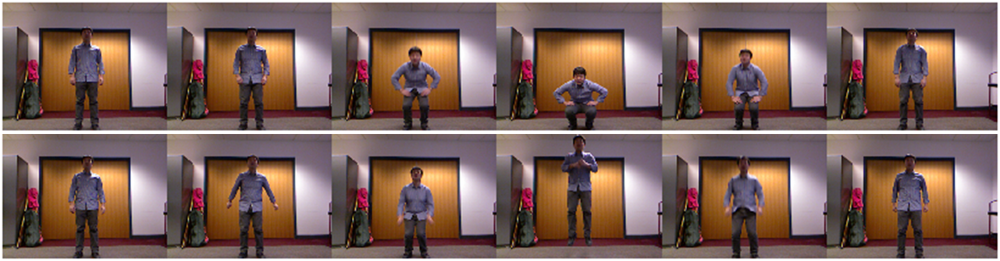
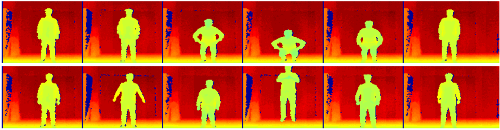
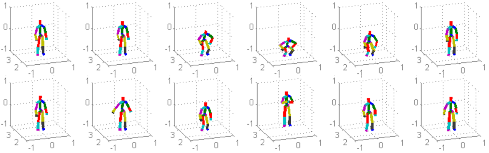

The RGB Videos (see example frames above) were encoded in mpeg-4. The resolution of the videos is 320*240. There are 20 subjects each subject has two long sequences, totally 20*2=40 videos. We provide the download links for the videos of 4 sub-groups (videos of 5 subjects) as well as all videos.
The depth sequences (see example frames above) were stored in Matlab data files (.mat). As the RGB videos, the download links are listed below.
3D coordinates of 20 joints (see example frames above) were computed for each frame of the depth data using Microsoft Kinect SDK. We stored the 3D body-joint data of each action sequence in a Matlab data file (.mat). Example codes as following are available to load and visualize the body-joint sequences. As the RGB videos and Depth data, the download links are listed below.